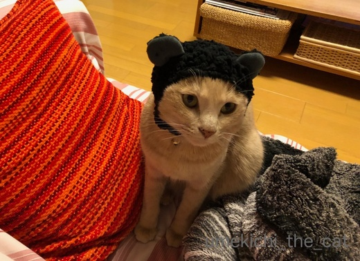
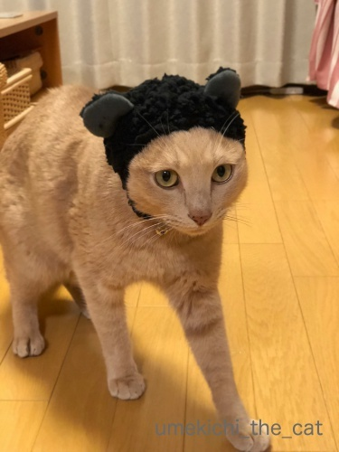
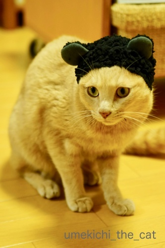
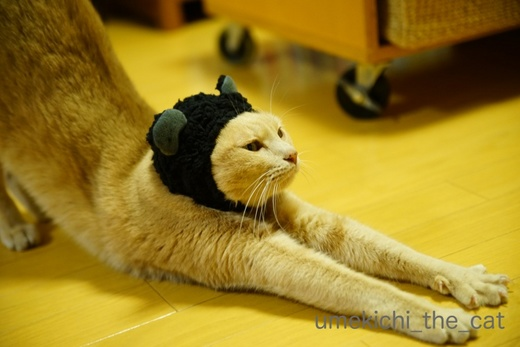
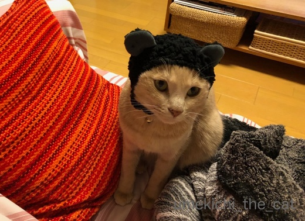
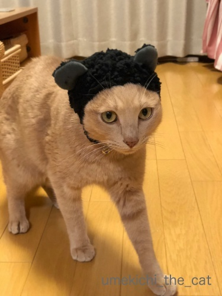
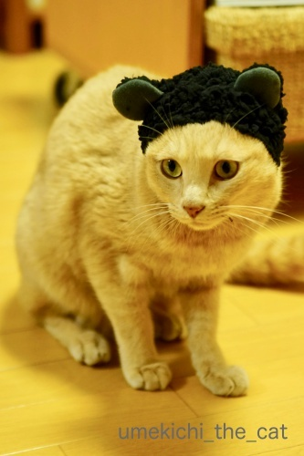
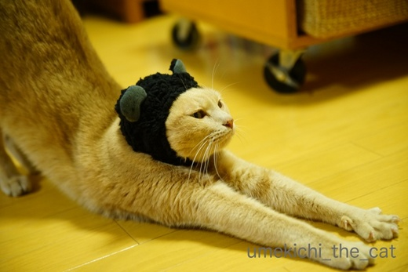

くま吉、被り納め [梅吉]
あちこちにプレゼントを配り歩いたりKENT0mgさんのところで友情出演したりと
クリスマスには大活躍をした梅吉さん。
サンタさんからご褒美のプレゼントをもらって来た様なのですが・・・

あ、あなた・・・だれ？

![[猫]](https://blog.ss-blog.jp/_images_e/101.gif) わしや うめきちやで
わしや うめきちやで
ねこくまちゃんいう ぷれぜんともらったん
がちゃいうくにの おもちゃなんやて

あまりにフィットしているのでそういう生き物かと思いましたよー (^▽^;)

本にゃんもあまり気にならない様で余裕でのび〜なんてしちゃってます(≧ω≦｡)
今までで最長装着時間！
まさかの被り物2連チャンの記事になっちゃいました。
ブログの方向性が怪しくなってきた・・・
次回、年内最後の更新はちゃんと軌道修正してアップしますねw
（コメント欄を開けておく更新はこれが年内最後になるかと思います）
では、これにて梅吉今年の被り納めと致します。
 ↑ガブッと一押し↑
↑ガブッと一押し↑
クリスマスには大活躍をした梅吉さん。
サンタさんからご褒美のプレゼントをもらって来た様なのですが・・・

あ、あなた・・・だれ？

ねこくまちゃんいう ぷれぜんともらったん
がちゃいうくにの おもちゃなんやて

あまりにフィットしているのでそういう生き物かと思いましたよー (^▽^;)

本にゃんもあまり気にならない様で余裕でのび〜なんてしちゃってます(≧ω≦｡)
今までで最長装着時間！
まさかの被り物2連チャンの記事になっちゃいました。
ブログの方向性が怪しくなってきた・・・
次回、年内最後の更新はちゃんと軌道修正してアップしますねw
（コメント欄を開けておく更新はこれが年内最後になるかと思います）
では、これにて梅吉今年の被り納めと致します。
2017-12-26 08:12
nice!(61)
コメント(24)

カフェオレ色の梅吉

梅吉 2023年8月10日 永眠


梅吉と出会った譲渡会

犬猫の理由なき殺処分ゼロ
妄想広告
UMEKICHI 光

爆発的に早い！
時々攻撃的！
Thanks to Mr.Boss365
爆発的に早い！
時々攻撃的！
Thanks to Mr.Boss365

キャーキャー(*‘∀‘)可愛過ぎですぅ～♪
似合ってますねぇ～！！
by きぃ (2017-12-26 08:46)
やばい！これは似合いすぎですよっ
あ～、このガチャほしいな～～～
相方君と上野歩いてるときに見つけて、やろうとしたら
「だめ！」って却下されたの。
ひとりで行ってこようかしら(笑)
最後のノビの写真、まったく違和感ないのがすごい ^ω^*)b
今年はお会いできて嬉しかったです。ありがとう！
来年もまたよろしくね^^
by リュカ (2017-12-26 09:31)
先生＆ちぃさんへ、
いや～、のびぃ～のお姿に感動いたしました。
来年に向けて新たな発想が生まれてきそうです。
かぶり王子に改めて感謝申し上げます。^^
当然、ガブっと！
by KENT0mg (2017-12-26 11:41)
かわいい! カワイイ! かわいー!! これいいですね~。うちの子にも被らせてみた~い(無理) 梅吉さんそのままクマちゃんで生活できそう。来年も宜しくお願いしますね。よいお年を!
by zombiekong (2017-12-26 12:30)
梅吉さん改めくま吉さん、見事に一体化してる(^▽^;)
このまま生活できちゃいそうに見えますね！
ウチにもあるんですが・・・10秒もたなかったです(-_-メ)
あっという間に年末、何とか年賀状は出したものの片づけは手付かず。
今年もなんちゃって大掃除で終わってしまいそうです。
梅吉さんもちぃｓさんもちぃ夫さんもどうぞよいお年をお迎えください♪
by ゆきち (2017-12-26 15:49)
可愛い〜ぃ。
ピッタリ〜ィ。
ノビノビして、リラックスムードですね。
梅吉さん家、楽しい日々をありがとうございました。
良いお年をお迎えください。
by kiki (2017-12-26 16:54)
きゃあ、可愛い～！
サイズ感といい、耳の形といい‥伸びまでしちゃってぇ♪
なごむ姿を見せてもらえて、嬉しいです＾＾
楽しい年の瀬を、そして良いお年をお迎えください＾＾
by sana (2017-12-26 18:34)
梅吉さん
ピッタリフィットしていますね！
体の一部に見えちゃいます(^^)
by ma2ma2 (2017-12-26 18:36)
これはピッタンコですね～。
ノビ～ッとしてる梅吉さん、最高のフォルムです(^^)
by kou (2017-12-26 19:25)
くまちゃんの被り物。梅吉くん似合ってるよ～♪
可愛いね～。
リラックスして伸び～まで。いいぞ！いいぞ！
家のパグパンダは目覚めたと思ったら、うんしょうんしょって怒ってるの。
寝起き悪っ(^-^;
サンタさんが終わったと思ったらお正月はすぐそこに。
よいお年をお迎えくださいね。来年もよろしくお願いします。
梅吉くんの活躍！期待してるぞっ(≧▽≦)
by emi (2017-12-26 19:48)
梅吉さんジャストフィットですね！
そして被り物をかぶってものびのびした表情だなんてすごい。^^;
来年もよろしくお願いします。^^)
by yes_hama (2017-12-26 21:28)
最長装着時間更新おめでとうございます(^^;
お正月前に、おめでとうが言えて幸せです(^^)
by riverwalk (2017-12-26 22:51)
ネコクマ梅吉さん、すっごく可愛い～(≧▽≦)
被り物が身についてきましたね！
こーゆー梅吉さんも良いです＾＾
そして、サンタさんのお手伝い お疲れ様でした～♪
あかりが、森へ飛んでいく途中で、
ジェットで飛び回る梅吉さんを見たそうです(^_-)-☆
また、来年もよろしくお願いいたします。
それでは、梅吉さん、ちぃさん、よいお年を(*^^*)
by マーヤ (2017-12-27 01:16)
黒くまちゃん（*´∀｀*）かわゆすなぁ♡
偶然ですが、先日わたしも同じものもらいました^^（白）
別の生き物になりますよね^^;
by Ja-Kou66 (2017-12-27 01:19)
こういう写真を見ると羨ましくて。
長男君だったら、説得したら被ってくれたかも＾＾；
by ぽちの輔 (2017-12-27 06:42)
梅吉さん、違和感感じることなく着こなしてますねぇ( ^ω^ )
くまさん、お似合いです=(^.^)=
うちは首輪も被り物もNGだからなぁ(⌒-⌒; )
by ニッキー (2017-12-27 08:22)
梅吉くんめっちゃ可愛い！！！(*´▽｀*)
全然違うネコさんに見えますよ～！っていうか耳の形も色も違うのにこんなに違和感なくしっくりくるのはなぜなんだ??
by palpal (2017-12-27 14:25)
あんら～、メッチャ似合うやん！ハンサムが際立つわー(≧∇≦)ｷｬｰ♪
ジュノンボーイ、優勝間違いなしだな！！
by Ginger (2017-12-27 21:44)
きぃさん＞
私もこんなに似合うとは思っていませんでしたーＯ(≧▽≦)Ｏ
来年はLeaちゃんが元気に走り回る姿を楽しみに
ブログを拝見しますね！
来年もよろしくお願いします＾＾
リュカさん＞
相方さんは被り物反対派なのかしらー？
あおうみちゃんも似合うと思うんだけどなぁ＾＾
＃ねこくまちゃんでメーカーが投稿を募集しているんだけど
違和感のなさでは梅吉が群を抜いているかもしれない・・・（親バカ目線）
今年はタイトなスケージュールな中、梅吉に会いに来てくれてありがとう！
来年もよろしくねー＾＾東京に行ったら遊んでねーー！！
KENT0mgさん＞
飼い主のアホさに諦めがついたのか梅吉が新境地を開拓いたしました＾＾
梅吉がどんな風にKENT0mgさんをインスパイア出来るのか
来年も楽しみにしていますね＾＾
zombiekongさん＞
そういえば・・・にゃんずさんは被り物OKな子がいらっしゃらない？
ダンゴくんあたりは協力してくれそうな気もするのですが・・・
梅吉は度重なる飼い主からのお願いに（強要ともいう）
諦めの気持ちが出て来たみたい・・・^^;
今年は色々お付き合いいただいてありがとうございましたm(_ _)m
zombiekongさんに描いていただいた「DJポリス」と「ジャグラー梅吉」は
今年作のフォトブックに収めました。
都合で出来上がりは来年になりそうなんですが出来上がったら
ブログにアップしますねー。
来年もよろしくお願いいたします(^_－)☆
ゆきちさん＞
palpalさんもコメントしてくれましたが耳の形も色も全然違うのに
この違和感の無さはなんなのでしょうかＯ(≧▽≦)Ｏ
同系色ではないのが幸いして可愛くなっちゃった？（親バカです・・・）
年末のお掃除は予定の半分も進まず私も終了です^^;
パッと見は（あくまでもみた感じ）は見苦しくないからOKとします！
年末年始は我が家で梅吉とゆっくり過ごします。
こてつくん＆猫父母さんも良いお年をお迎えくださいね＾＾
（怪我しないでねー！）
kikiさん＞
被せられた瞬間「キョトン」としていましたよー。
その後のびーっとしてやっと何か被せられた事に気づいた様です^^;
寝起きだったのがよかったのかもしれませんw
kikiさんは今年の年末年始はご主人とお二人でのんびりでしょうか＾＾
どうぞ良いお年をお迎えくださいませ！
by ちぃ (2017-12-29 13:52)
sanaさん＞
年の瀬に梅吉の姿で和んでいただいて嬉しいです＾＾
私が言うのもなんですが本当に似合っていてびっくりです！！
さてさて、素敵なお人形さんたちは
クリスマスパーティーを終えてお正月を迎えられるのでしょうか！？
どうぞ、穏やかな年末をそして良いお年をお迎えくださいませ＾＾
ma2ma2さん＞
こう言う生き物だから！と言い張りたい気分になりましたー^^;
ma2ma2さんは年末年始も空の上なのでしょうか・・・
どうぞ、良いお年をお迎えくださいませ＾＾
kouさん＞
首から上は不思議生物なのに
日常生活そのままの「のび〜」のギャップが面白くて
ニヤニヤが止まらない飼い主です＾＾
年末年始は雪かきする必要がないくらい穏やかな天気だと良いですねー。
どうぞ良いお年をお迎えくださいませ＾＾
emiさん＞
梅吉が寝起きのちょっとぼけ〜っとしているときにかぶせました^^;
のび〜っとした後に「なんや あたまについてる！」と
振り落としていましたよー(^▽^;)
パグパンダちゃんは寝起きが悪いのね！そういう子、かまいたいっＯ(≧▽≦)Ｏ
それでなくても一年が早いのにクリスマス以降は
急加速して日々が過ぎますよね。
台所仕事もお掃除も程々にして（^^;）新年を迎えたいと思います！
来年もどうぞよろしくね(^_－)☆
そして、穏やかな年末を＆良いお年をお迎えくださいませ＾＾
yes_hamaさん＞
のび〜っをして２〜３歩あるいてから「わしのあたまに なんかのってる！」と
気づいた寝起きの梅吉でしたー^^;
この調子でお正月の被り物も着こなして欲しいものです（まだやるんかい！）。
アズ氏とともに穏やかな年末を＆良いお年をお迎えくださいませ＾＾
riverwalkさん＞
梅吉頑張りましたー！もっとも寝起きではあったのですが・・・^^;
おめでとうはいつ言っていただいても嬉しい言葉ですね！
来年もたくさんそう言っていただけるように
梅吉に頑張ってもらわなきゃ！
どうぞ、良いお年をお迎えくださいませ＾＾
by ちぃ (2017-12-29 15:26)
マーヤさん＞
いろんなものを頭に乗せられてだんだん慣れて来たような・・・^^;
もうさっさと諦めてポーズをキメるくらいになって欲しいものです＾＾
梅吉の来年の目標はあかりちゃんのホウキに乗せてもらうことだとか！
ジェットでホウキを引っ張るのも有りかしら・・・・(≧ω≦｡)
zonbiekongさんにお願いしちゃおうかしらー！！
来年もどうぞよろしくお願いいたします！！
あかりちゃんと一緒に良いお年をお迎えくださいね＾＾
Ja-Kou66さん＞
#ねこくまちゃんで白いバージョンも見ましたー！
別の生き物っぷりが可愛くて
被せるスキを日々狙っております(≧ω≦｡)
ねこザイルのみなにゃんと良いお年をお迎えくださいませ＾＾
ぽちの輔さん＞
おお！
ぽちの輔さんはちゃんと話し合いで同意を得た上で被せるのですね！！
我が家は寝込みを襲うor後ろからの不意打ち派です^^;
氷が張る寒さの様ですが外猫軍団の方々は
こたつベッドでぬくぬくですねー＾＾
みなさんで良いお年をお迎えくださいませ。
ニッキーさん＞
くまがこれだけ似合うとは！！
私も新たな発見でしたよー＾＾
今年一年色々頭に乗せられて梅吉も慣れて来たのでしょうか。
本にゃんも楽しんでくれている・・・と思いたいです(⌒_⌒;
ニッキーさん、ゴッドマザー様＆にゃんこのみなにゃん、
どうぞ良いお年をお迎えくださいませ＾＾
palpalさん＞
そうなんですよー！！
黒くて丸い耳がどうしてこんなに似合うんだーー！！
パンダ効果かしら・・・(≧ω≦｡)
来年もきなこちゃんとナノくんの楽しいマンガ楽しみにしていますよー。
良いお年をお迎えくださいませ＾＾
Gingerさん＞
＃ねこくまちゃんでいろんなにゃんこを見ましたが
梅吉が一番似合って可愛かった・・・(〃ω〃)
ジュノンボーイ、反則だけど行けそうな気がしますっ(๑•̀ㅂ•́)و✧
今年はたくさんコメントをいただいてありがとうございましたm(_ _)m
来年もよろしくお願いいたします。
良いお年をお迎えくださいませ＾＾
by ちぃ (2017-12-30 07:03)
干支に熊年があれば年賀状に使えそうですね。
by 響 (2017-12-30 09:49)
久々に訪問させて頂きました。
28日の記事と合わせて、すっかり癒されました。
梅吉さんに感謝です（笑)
来年もどうぞよろしくお願い致します。
良いお年をお迎えください！
by うめむす (2017-12-30 11:19)
響さん＞
猫年、熊年どちらもなくて本当に残念です^^;
強引に「いぬです！」って言い張っちゃおうかしら・・・
どうぞ良いお年をお迎えくださいね＾＾
うめむすさん＞
お忙しかったようで、でもそれも人望あってこそですよー＾＾
年末にアホな記事をアップしましたが
和んでいただけてよかったー！！
年末年始はゆっくりのんびり良いお年をお迎えくださいね＾＾
来年もよろしくお願いいたします。
by ちぃ (2017-12-30 15:57)